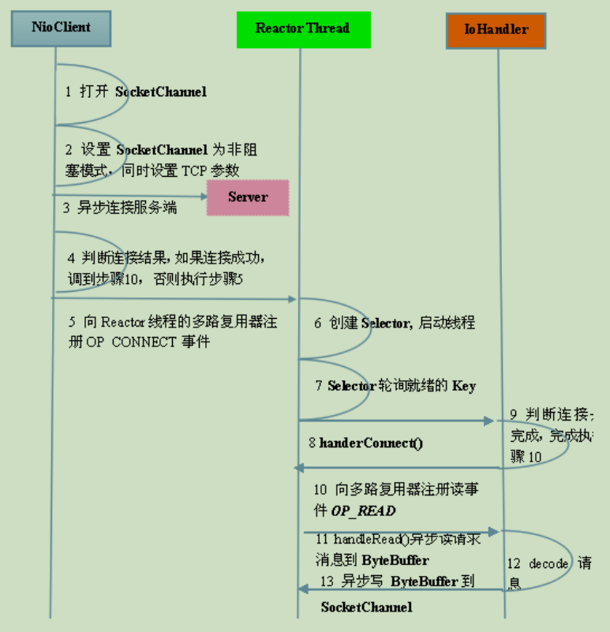
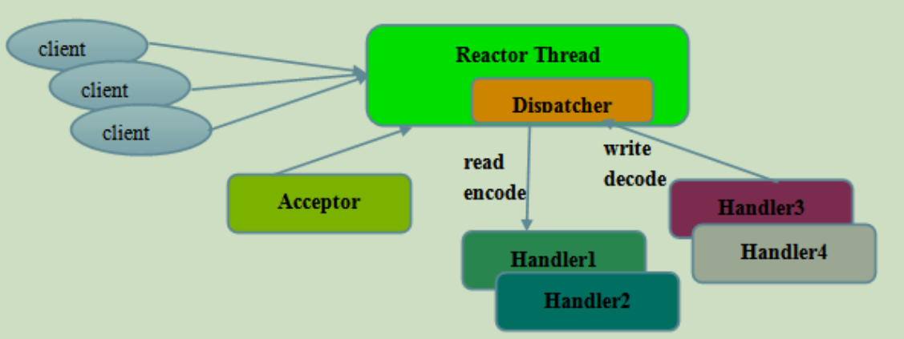
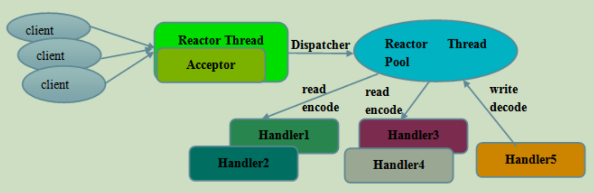
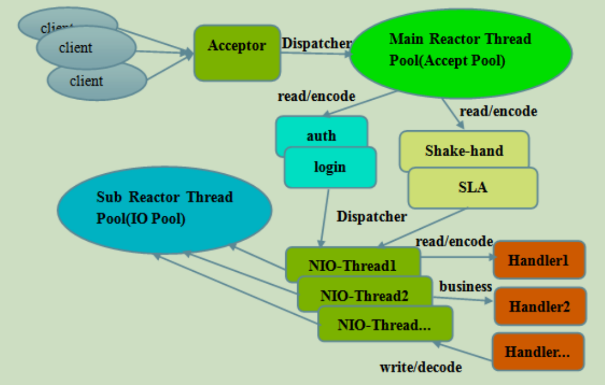
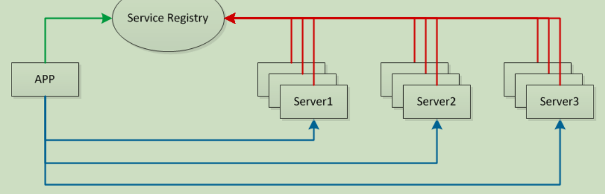
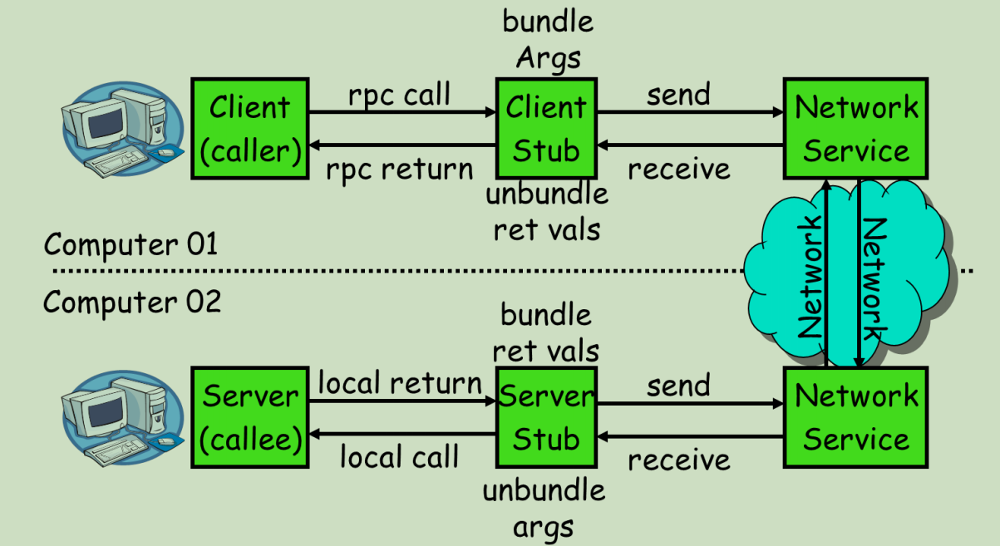
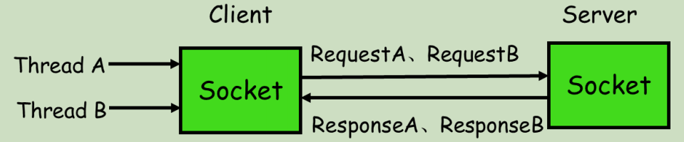
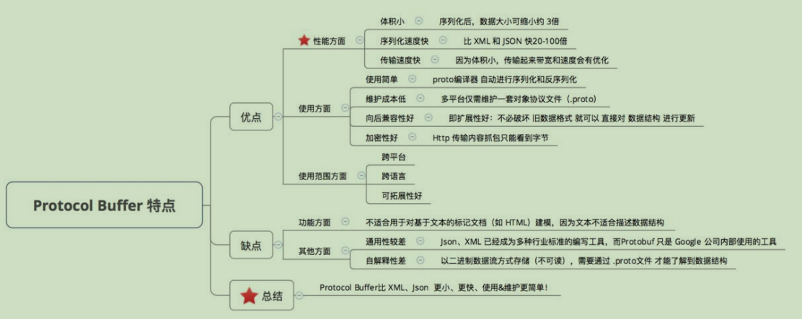
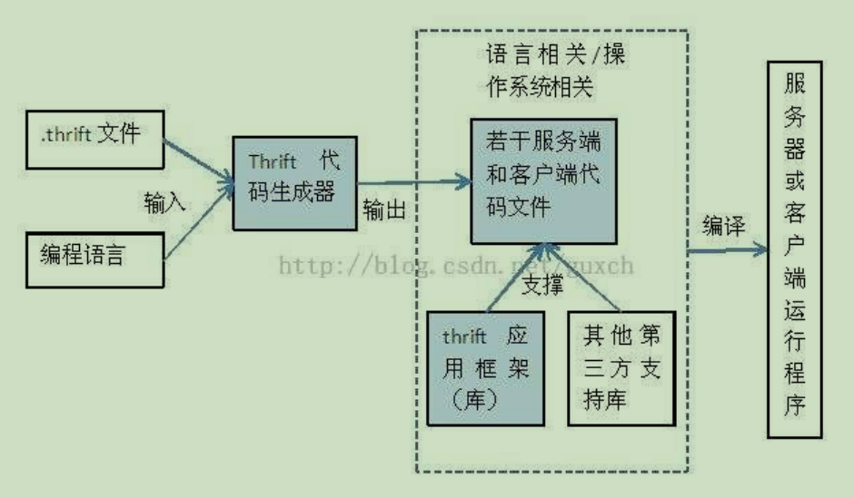

原文连接:https://www.cnblogs.com/HuiH/p/11813561.html
一、Netty原理
Netty是一个高性能、异步事件驱动的NIO框架，基于Java NIO提供的API实现。它提供了对TCP、UDP和文件传输的支持，作为一个异步NIO框架，Netty的所有IO操作都是异步非阻塞的，通过Future-Listener机制，用户可以方便的主动获取或通过通知机制获得IO操作结果。
二、Netty的高性能
在IO编程过程中，当需要同时处理多个客户端接入请求时，可以利用多线程或IO多路复用技术进行处理。IO多路复用技术通过多个IO阻塞复用到同一个select的阻塞上，从而使得系统在单线程的情况下可以同时处理多个客户端请求。与传统的多线程/多进程模型相比，IO多路复用的最大优势是系统开销小，系统不需要创建新的额外进程或线程，也不需要维护这些进程和线程的运行，降低了系统的维护工作量，节省了系统资源。
与socket类和serversocket类相对应，NIO也提供了socketchannel和serversocketchannel两种不同的套接字通道实现。
1.多路复用通讯方式
Netty架构按照Reactor模式设计和实现，它的服务端通信序列图如下：

客户端通信序列图如下：

Netty的IO线程NIOEventLoop由于聚合了多路复用器Selector，可以同时并发处理成败上千个客户端Channel，由于读写操作都是非阻塞的，这就可以充分提升IO线程的运行效率，避免由于频繁IO阻塞导致的线程挂起。
2.异步通讯NIO
由于Netty采用了异步通信模式，一个IO线程可以并发处理N个客户端连接和读写操作，这从根本上解决了传统同步阻塞IO一连接一线程模型，架构的性能、弹性伸缩能力和可靠性都得到了极大的提升。
3.零拷贝（direct buffers 使用堆外直接内存）
1）Netty的接受和发送ByteBuffer采用direct buffers，使用堆外直接内存进行socket读写，不需要进行字节缓冲区的二次拷贝。如果使用传统的堆内存（heap buffers）进行socket读写，JVM会将堆内存buffer拷贝一份到直接内存中，然后才写入socket中。相比于堆外直接内存，消息在发送过程中多了一次缓冲区的内存拷贝。
2）Netty提供了组合buffer对象，可以聚合多个ByteBuffer对象，用户可以像操作一个buffer那样方便地对组合buffer进行操作，避免了传统通过内存拷贝的方式将几个小buffer合并成一个大的buffer。
3）Netty的文件传输采用了transferTo方法，它可以直接将文件缓冲区的数据发送到目标channel，避免了传统通过循环write方法导致的内存拷贝问题。
4.内存池（基于内存池的缓冲区重用机制）
随着JVM虚拟机和JIT即时编译技术的发展，对象的分配和回收是个非常轻量级的工作。但是对于缓冲区buffer，情况却稍有不同，特别是对于堆外直接内存的分配和回收，是一件耗时的操作。为了尽量重用缓冲区，Netty提供了基于内存池的缓冲区重用机制。
5.高效的Reactor线程模型
常用的reactor线程模型有三种，reactor单线程模型，reactor多线程模型，主从reactor多线程模型。
1）reactor单线程模型，指的是所有的IO操作都在同一个NIO线程上面完成，NIO线程的职责如下：
- 作为NIO服务端，接收客户端的TCP连接；
- 作为NIO客户端，向服务端发起TCP连接；
- 读取通信对端的请求或应答消息；
- 向通信对端发送消息请求或应答消息；

由于reactor模式使用的是异步非阻塞IO，所有的IO操作都不会导致阻塞，理论上一个线程可以独立处理所有IO相关的操作。从架构层面看，一个NIO线程确实可以完成其承担的职责。例如，通过acceptor接收客户端的TCP连接请求消息，链路建立成功后，通过dispatch将对应的ByteBuffer派发到指定的handler上进行消息解码。用户handler可以通过NIO线程将消息发送给客户端。
2）reactor多线程模型
reactor多线程模型与单线程模型最大的区别就是有一组NIO线程处理IO操作。有专门一个NIO线程-Acceptor线程用于监听服务端，接收客户端的TCP连接请求；网络IO操作-读、写等由一个NIO线程池负责，线程池可以采用标准的JDK线程池实现，它包含一个任务队列和N个可用的线程，由这些NIO负责消息的读取、解码、编码和发送；

3）主从reactor多线程模型
服务端用于接收客户端连接的不再是一个单独的NIO线程，而是一个独立的NIO线程池。acceptor接收客户端TCP连接请求处理完成后（可能包含接入认证等），将新创建的socketchannel注册到IO线程池（subReactor 线程池）的某个IO线程上，由它负责socketchannel的毒血和编解码工作。acceptor线程池仅仅只用于客户端的登陆、握手和安全认证，一旦链路建立成功，就将链路注册到后端subReactor线程池的IO线程上，由IO线程负责后续的IO操作。

6.无锁设计、线程锁定
Netty采用了串行无锁化设计，在IO线程内部进行串行操作，避免多线程竞争导致的性能下降。表面上看，串行化设计似乎CPU利用率不高，并发程度不够。但是，通过调整NIO线程池的线程参数，可以同时启动多个串行化的线程并行运行，这种局部无锁化的串行线程设计相比一个队列-多个工作线程模型性能更优。
Netty的NioEventLoop读取到消息后，直接调用ChannelPipeline的fireChannelRead（Object msg），只要用户不主动切换线程，一直会由NioEventLoop调用到用户的handler，期间不进行线程切换，这种串行化处理方式避免了多线程操作导致的锁竞争，从性能角度看是最优的。
7.高性能的序列化框架
Netty默认提供了对Google Protobuf的支持，通过扩展Netty的编解码接口，用户可以实现其他的高性能序列化框架，例如Thrift的压缩二进制编解码框架。
1）SO_RCVBUF和SO_SNDBUF：通常建议值为128K或256K。
小包封大包，防止网络阻塞
2）SO_TCPNODELAY：NAGLE算法通过将缓冲区内的小封包自动相连，组成较大的封包，阻止大量小封包的发送阻塞网络，从而提高网络应用效率。但是对于时延敏感的应用场景需要关闭该优化算法。
软中断Hash值和CPU绑定
3）软中断：开启RPS后可以实现软中断，提升网络吞吐量。RPS根据数据包的源地址，目的地址以及目的和源端口，计算出一个hash值，然后根据这个hash值来选择软中断运行的CPU，从上层来看，也就是说将每个连接和CPU绑定，并通过这个hash值，来均衡软中断在多个CPU上，提升网络并行处理性能。
三、Netty RPC实现
RPC，即Remote Procedure Call（远程过程调用），调用远程计算机上的服务，就像调用本地服务一样。RPC可以很好的解耦系统，如webservice就是一种基于HTTP协议的RPC。
这个RPC整体框架如下：

1.关键技术
1）服务发布与订阅：服务端使用zookeeper注册服务地址，客户端从zookeeper获取可用的服务地址。
2）通信：使用Netty作为通信框架。
3）Spring：使用spring配置服务，加载bean，扫描注解。
4）动态代理：客户端使用代理模式透明化服务调用。
5）消息编解码：使用Protostuff序列化和反序列化消息。
2.核心流程
1）服务消费方（client）调用以本地调用方式调用服务。
2）client stub 接收到调用后负责将方法、参数等组装成能够进行网络传输的消息体。
3）client stub找到服务地址，并将消息发送到服务端。
4）server stub 收到消息后进行解码。
5）server stub 根据解码结果调用本地的服务。
6）本地服务执行并将结果返回给server stub。
7）server stub 将返回结果打包成消息并发送至消费方。
8）client stub 接受到消息，并进行解码。
9）服务消费方得到最终结果。
RPC的目标就是要2~8这些步骤都封装起来，让用户对这些细节透明。Java一般使用动态代理方式实现远程调用。

3.消息编解码
消息数据结构（接口名称+方法名+参数类型和参数值+超时时间+requestID）
客户端的请求消息结构一般需要包括以下内容：
1）接口名称：在我们的例子里接口名是“HelloWorldService”，如果不传，服务端就不知道调用哪个接口了；
2）方法名：一个接口内可能有很多方法，如果不传方法名，服务端就不知道调用的哪个方法；
3）参数类型和参数值：参数类型有很多，例如有boolean、int、long、double、string、map、list，甚至如struct（class）；以及相应的参数值；
4）超时时间
5）requestID：标识唯一请求id；
6）服务端返回的消息：一般包括：返回值+状态code+requestID
序列化
目前互联网公司广泛使用Protobuf、Thrift、Avro等成熟的序列化解决方案来搭建RPC框架，这些都是久经考验的解决方案。
4.通讯过程
核心问题（线程暂停、消息乱序）
如果使用netty的话，一般会用channel.writeAndFlush()方法来发送消息二进制串，这个方法调用后对于整个远程调用（从发送请求到接收到结果）来说是一个异步的，即对于当前线程来说，将请求发送出来后，线程就可以往后执行了。至于服务端的结果，是服务端处理完成后，再以消息的形式发送给客户端的。于是这里出现以下两个问题：
1）怎么让当前线程“暂停”，等结果回来后，再向后执行？
2）如果有多个线程同时进行远程方法调用，这是建立在client server 之间的socket连接上会有很多双方发送的消息传递，前后顺序也可能是随机的，server处理完结果后，将结果消息发送给client，client收到很多消息，怎么知道哪个消息是原先哪个线程调用的？
如下图所示，线程A和线程B同时向client socket发送请求requestA和requestB，socket先后将requestB和requestA发送至server，而server可能将responseB先返回，尽管requestB请求到达的时间更晚。我们需要一种机制保证responseA丢给ThreadA，responseB丢给ThreadB。

通讯流程
requestID生成-AtomicLong
1）client 线程每次通过socket调用一次远程接口前，生成一个唯一的ID，即requestID（requestID必须保证在一个socket连接里面是唯一的），一般常常使用AtomicLong从0开始累计数字生成唯一ID。
存放回调对象callback到全局ConcurrentHashMap
2）将处理结果的回调对象callback，存放到全局ConcurrentHashMap里面put(requestID,callback)；
synchronized获取回调对象callback的锁并自旋wait
3）当线程调用channel.writeAndFlush()发送消息后，紧接着执行callback的get()方法试图获取远程返回的结果。在get()内部，则使用synchronized获取回调对象callback的锁，再先检测是否已经获取到结果，如果没有，然后调用callback的wait()方法，释放callback上的锁，让当前线程处于等待状态。
监听消息的线程收到消息，找到callback上的锁并唤醒
4）服务端接收到请求并处理后，将response结果（此结果中包含了前面的requestID）发送给客户端，客户端socket连接上专门监听消息的线程收到消息，分析结果，取到requestID，再从前面的ConcurrnetHashMap里面get(requestID)，从而找到callback对象，再用synchronized获取callback上的锁，将方法调用结果设置到callback对象里，再调用callback.notifyAll()唤醒前面处于等待状态的线程。
1 public Object get() {
2 synchronized (this) { // 旋锁
3 while (true) { // 是否有结果了
4 If （!isDone）{
5 wait(); //没结果释放锁，让当前线程处于等待状态
6 }else{//获取数据并处理
7 }
8 }
9 }
10 }
11 private void setDone(Response res) {
12 this.res = res;
13 isDone = true;
14 synchronized (this) { //获取锁，因为前面 wait()已经释放了 callback 的锁了
15 notifyAll(); // 唤醒处于等待的线程
16 }
17 }
四、RMI实现方式
Java远程方法调用，即Java RMI（Java remote method invocation）是Java编程语言里，一种用于实现远程调用的应用程序编程接口。它使客户机上运行的程序可以调用远程服务器上的对象。远程方法调用特性使Java编程人员能够在网络环境中分布操作。RMI全部的宗旨就是尽可能简化远程接口对象的使用。
1.实现步骤
1）编写远程服务接口，该接口必须继承java.rmi.Remote接口，方法必须抛出java.rmi.RemoteException异常。
2）编写远程接口实现类，该实现类必须继承java.rmi.server.UnicastRemoteObject类；
3）运行RMI编译器（rmic），创建客户端stub类和服务端skeleton类；
4）启动一个RMI注册表，以便驻留这些服务；
5）在RMI注册表中注册服务；
6）客户端查找远程对象，并调用远程方法；
1 1：创建远程接口，继承 java.rmi.Remote 接口
2 public interface GreetService extends java.rmi.Remote {
3 String sayHello(String name) throws RemoteException;
4 }
5 2：实现远程接口，继承 java.rmi.server.UnicastRemoteObject 类
6 public class GreetServiceImpl extends java.rmi.server.UnicastRemoteObject implements GreetService {
7 private static final long serialVersionUID = 3434060152387200042L;
8 public GreetServiceImpl() throws RemoteException {
9 super();
10 }
11 @Override
12 public String sayHello(String name) throws RemoteException {
13 return "Hello " + name;
14 }
15 }
16 3：生成 Stub 和 Skeleton;
17 4：执行 rmiregistry 命令注册服务
18 5：启动服务
19 LocateRegistry.createRegistry(1098);
20 Naming.bind("rmi://10.108.1.138:1098/GreetService", new GreetServiceImpl());
21 6.客户端调用
22 GreetService greetService = (GreetService) Naming.lookup("rmi://10.108.1.138:1098/GreetService");
23 System.out.println(greetService.sayHello("Jobs"));
五、Protocol Buffer
Protocol buffer是Google的一个开源项目，它是用于结构化数据串行化的灵活、高效、自动的方法，例如XML，不过它比XML更小、更快、更简单。你可以定义自己的数据结构，然后使用代码生成器的代码来读写这个数据结构。你甚至可以在无需重新部署程序的情况下更新数据结构。
1.特点

Protocol Buffer的序列化 & 反序列化简单 & 速度快的原因是：
1）编码/解码方式简单（只需要简单的数字运算=位移等）
2）采用protocol buffer 自身的框架代码和编译器共同完成；
Protocol Buffer的数据压缩效果好（即序列化的数据量体积小）的原因是：
1）采用了独特的编码方式，如Varint、Zigzag编码方式等；
2）采用T-L-V的数据存储方式，减少了分隔符的使用 & 数据存储的紧凑
六、Thrift
Apache Thrift是Facebook实现的一种高效的、支持多中编程语言的远程服务调用的框架。
目前流行的服务调用方式有很多种，例如基于SOAP消息格式的web service，基于JSON消息格式的RESTful服务等。其中所用到的数据传输方式包括XML、JSON等，然而XML相对体积太大，传输效率低，JSON体积较小，新颖，但不够完善。
本文将介绍由facebook开发的远程服务调用框架Apache Thrift，它采用接口描述语言定义并创建服务，支持可扩展的跨语言服务开发，所包含的代码生成引擎可以在多种语言中，如C++、Java、python、PHP、ruby等创建高效的、无缝的服务，其传输数据采用二进制格式，相对XML和JSON体积更小，对于高并发、大数据量和多语言的环境更有优势。
